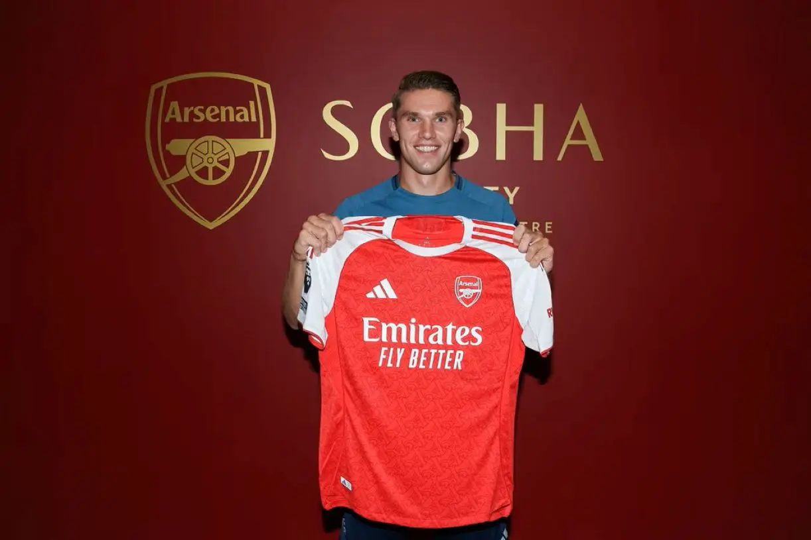

Arsenal · Viktor Gyökeres
Until I put on
the mask.
Từ một bản hợp đồng bước vào Emirates giữa những hoài nghi, tới một người khiến cả khán đài cùng đưa tay che miệng.

Không phải ai cũng bước vào Arsenal bằng một con đường trải đầy sự tin tưởng. Có những người vừa cầm áo lên là đã được yêu, có những người chỉ cần xuất hiện trong màu đỏ trắng là người ta đã muốn tin rằng đây chính là mảnh ghép còn thiếu, nhưng cũng có những người vừa bước qua cánh cửa Emirates đã phải đi ngang qua rất nhiều ánh mắt nghi ngờ, rất nhiều câu hỏi về mức giá, về sự phù hợp, về việc liệu những bàn thắng ở nơi khác có thật sự còn nguyên giá trị khi được mang tới Premier League, tới những đêm Champions League nghẹt thở, tới một đội bóng mà sau ba lần về nhì, thứ duy nhất còn thiếu không còn là tiềm năng nữa, mà là khả năng đi tới tận cùng.
Viktor Gyökeres là một người như vậy.

Ở Arsenal, số 14 chưa bao giờ chỉ là một con số in trên lưng áo, nó là một cái bóng, một ký ức, một tiêu chuẩn gần như bất khả chạm tới, bởi mỗi lần nhìn thấy con số đó, người ta không chỉ nghĩ về một tiền đạo, mà nghĩ về Thierry Henry, về những pha cứa lòng, những cú trượt cỏ ở Highbury, những buổi chiều mà bóng đá tưởng như được chơi bằng một thứ ngôn ngữ riêng chỉ Arsenal mới hiểu. Vậy nên khi Gyökeres khoác lên mình số áo đó, sự hoài nghi dành cho anh không chỉ nằm ở chuyện anh có đủ giỏi hay không, mà còn nằm ở câu hỏi liệu anh có đủ bản lĩnh để sống dưới một biểu tượng lớn tới vậy, trong một câu lạc bộ vốn luôn nhớ rất lâu cả những điều đẹp đẽ lẫn những vết thương của mình.
Nhưng bóng đá, may mắn thay, không chỉ được viết bằng những nghi ngờ trước ngày bóng lăn.
Bóng đá còn được viết bằng cách một cầu thủ chạy tới kiệt sức để pressing một đường chuyền tưởng như vô nghĩa, bằng cách anh va vào trung vệ đối phương như thể mỗi pha tranh chấp là một lời đáp trả, bằng cách anh bước qua những trận đấu mà mọi cú chạm bóng đều bị soi xét, rồi vẫn cứ tiếp tục, vẫn cứ húc vào hàng thủ đối phương, vẫn cứ làm công việc của mình với cái vẻ lì lợm của một người hiểu rằng tình yêu ở Arsenal hiếm khi tới dễ dàng, nhưng một khi đã tới, nó sẽ ở lại rất lâu.
Với Gyökeres, câu đó gần như vận vào hành trình của anh theo một cách rất lạ, bởi ngày anh tới, người ta nói nhiều về mức giá, về số áo 14, về cái bóng Henry, về việc liệu một tiền đạo từ Sporting có thật sự đủ sức bước vào một mùa giải mà Arsenal không còn được phép chỉ tiến bộ nữa, lần này, chúng ta buộc phải thắng. Nhưng rồi sau cùng, thứ khiến khán đài nhớ về anh không chỉ là những bàn thắng, mà là cái khoảnh khắc cả biển người áo đỏ trắng cùng đưa tay che miệng, cùng đeo lên một chiếc mặt nạ tưởng tượng, và biến celebration của một người thành ký ức của tất cả.
Tâm lý học có một điều khá thú vị gọi là “underdog effect”, khi con người thường dễ bị kéo về phía những nhân vật bị đánh giá thấp, miễn là họ nhìn thấy ở đó sự nỗ lực, sự chịu đựng, và cảm giác rằng người đó thật sự xứng đáng được yêu. Có lẽ Gyökeres ở Arsenal cũng đi qua con đường đó, từ một bản hợp đồng bị soi từng con số, từng pha chạm bóng, từng cơ hội bị bỏ lỡ, tới một người mà khán đài bắt đầu yêu không chỉ vì anh ghi bàn, mà vì cái cách anh chiến đấu như thể mỗi lần bị nghi ngờ lại là thêm một lý do để anh cắm đầu chạy tiếp.
Và rồi tấm hình này xuất hiện, đẹp không chỉ vì một cầu thủ đang đứng trước đám đông, mà vì phía sau anh, cả khán đài cùng làm theo một động tác vốn ban đầu chỉ thuộc về riêng anh. Émile Durkheim từng gọi những khoảnh khắc một cộng đồng cùng bị cuốn vào một hành động, một cảm xúc, một thứ năng lượng chung là “collective effervescence”. Bóng đá có lẽ là một trong những nơi hiếm hoi mà điều đó hiện ra rõ ràng tới vậy, khi hàng chục ngàn con người xa lạ bỗng cùng hát một bài hát, cùng giơ tay theo một nhịp, cùng sống trong một khoảnh khắc mà ranh giới giữa cá nhân và tập thể gần như biến mất. Và trong bức ảnh này, khi Gyökeres đứng phía trước còn cả khán đài phía sau cùng đưa tay che miệng, celebration đó không còn thuộc riêng về anh nữa, nó đã trở thành một nghi lễ nhỏ của Emirates, một dấu hiệu cho thấy người từng bị nghi ngờ cuối cùng đã được đám đông nhận vào ký ức chung của họ.
Đó là cách một cult hero được sinh ra. Không phải bằng sự hoàn hảo, bởi những cult heroes gần như chưa bao giờ được yêu vì họ hoàn hảo. Họ được yêu vì họ có cái gì đó rất dễ nhớ, rất dễ bám vào trí nhớ, có thể là một bàn thắng ở thời điểm không ai quên được, một dáng chạy, một pha ăn mừng, một chút điên, một chút ngang, một chút bất cần, và quan trọng nhất là cảm giác rằng họ hiểu mình đang chiến đấu vì điều gì. Gyökeres có thể không cần phải là Henry mới, không cần phải làm một phiên bản nào của quá khứ sống lại, bởi sau cùng, cách tốt nhất để bước ra khỏi cái bóng của một huyền thoại không phải là cố để trở nên giống họ, mà là tạo ra một thứ đủ riêng để người ta thôi hỏi anh là ai, và bắt đầu nhớ rằng anh là chính anh.
Từ một người bị nghi ngờ, tới một người khiến cả khán đài cùng che miệng.
Và ở Arsenal, đôi khi chỉ cần như vậy thôi, là đủ để một cái tên bước ra khỏi những câu hỏi ban đầu, rồi đi thẳng vào vùng ký ức mà người hâm mộ sẽ còn nhắc lại rất lâu sau này.